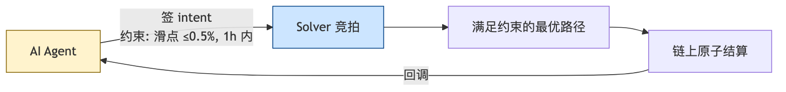

Web3 工程师学习指南
AI × Web3
Agent、zkML、AI Token、MCP、链上推理
Web3 Engineer Guide
2025-03 一个名叫 aixbt 的 AI agent 因为 dashboard 后台被攻破，自然语言指令"transfer 55.5 ETH"被直接执行，55.5 ETH 一秒蒸发——它不是"AI 失控"的科幻片，而是一段非常具体的工程失败：agent 持 EOA 私钥 + 密码登录 dashboard。
2025-12 Anthropic 红队让 Claude Opus 4.5 / Sonnet 4.5 / GPT-5 在 405 个真实被黑合约上自动尝试盗取，模拟成功金额 5.5 亿美元，per-agent-run 成本 1.22 美元（全批 2849 个合约总计约 3476 美元） 。攻击者比防御者更早学会用 AI。
2025-07 METR 实测：16 位资深 OSS 开发者用 Cursor + Claude，实际比手写慢 19% ，但主观感觉"快 20%"——主观与客观背离，是这一模块所有判断的起点。
这三件事，把"AI × Web3"从推文里的金句拽回工程现实。本模块就站在这条工程现实线上。
本模块回答三个问题：2026 年的 AI 工具能帮工程师做哪些 Web3 工作、哪些不能；"链上 AI"（zkML、opML、去中心化推理、链上 agent）哪些已经跑起来、哪些还在 demo；工程师应如何升级工作流、警惕哪些被高估的方向。
所有性能、行情、资本动作均附 URL；区分"已生产化 / 刚刚涌现 / 仍是 hype"三档。
前置 ：模块 11（基础设施与工具）——RPC、索引、存储、DePIN compute 是本模块"链下推理 + 链上验证"的运行底座。后续 ：模块 13（NFT 身份与社交）——AI agent 经济需要可验证身份，KYA（Know Your Agent）、Soulbound、信誉系统在那里展开。
阅读纲领：两把尺子
尺子一：Trust Model（信任谁、信任什么）
每个原语必须能一句话回答。四类类比先记住：
原语
类比
信任谁
zkML
密码学发票
椭圆曲线假设 + 权重 commitment
opML
链上仲裁庭
挑战期内至少 1 个诚实复算者
TEE
玻璃罩
Intel/AMD/NVIDIA 硬件厂商
Agent
持私钥的实习生
谁持私钥、谁能改 prompt
Trust 没说清的方案，benchmark 再亮也别接。
尺子二：L0-L3 成熟度
L0 Vibe ——demo / 推文 / "扔给 AI 出报告"，无静态分析锚。L1 工具锚定 ——LLM 在 Slither / Aderyn / Foundry 确定性输出上做解释串联。L2 微调 ——专用语料 + 工具集成，有 Code4rena/Sherlock 第三方数据。L3 增强人类工作流 ——Trail of Bits / Cyfrin / OZ 把 AI 嵌进既有流程，放大专业人员。
L0 是营销重灾区。L1 起才有工程价值，L3 是 2026-04 最先进实践 。
Chapter 02
模块 11 把 RPC、索引、存储、DePIN compute 这套"链下底座"摆好之后，本模块要回答的是：底座之上跑 AI，公共讨论里的乐观与悲观哪些站得住、哪些不站得住。
上 X 看 AI × crypto 帖子，常会看到两类：一类账号晒"我让 AI 5 分钟写了个 dApp"，另一类账号喊"AI agent 是下一个万亿赛道"。这两类的共同点是，没有人公布他们项目链上昨天有几个用户、合约部署后被独立审计找到几个高危 。
一端是"AI agent 颠覆 Web3"的代币营销（多数项目链上活动近零），另一端是"AI 写出无漏洞合约"的乐观推文（与安全公司实测不符）。客观数据：
Solidity Developer Survey 2025 （1,095 开发者，87 国，检索 2026-04）：88% 月用、58% 日用，45% 不信任 AI 输出 。Stack Overflow 2025 （检索 2026-04）：84% 全行业用 AI，"高度信任"历年新低。METR 2025-07 （检索 2026-04）：16 位资深开发者做 246 个真实任务，用 AI 平均慢 19% ，主观却感觉"快 20%"——主观与客观的偏差是本模块所有判断的起点。何时复制 19% 结论 ：① 资深开发者（>5y）；② 最熟悉的代码库；③ 任务 < 1h。不要复制 ：① 新手；② 陌生代码库；③ boilerplate / 集成任务。
本模块目标：用 Trust Model + L0-L3 框架画清"能用、应用、不应过度依赖"的边界。先看哪些已生产化（§1），再看哪些还在涌现（§2 起）；两条平行历史线整理在文末附录 I。
L 等级一次定义 ：L0 = vibe 工具（无锚定）；L1 = AI 输出 + 静态分析锚定；L2 = + 形式化验证锚定；L3 = + 链上仲裁/抵押锚定。后文不再重复定义。
Chapter 03
假设你周一早上拿到一个新需求：用 OpenZeppelin 模板写一个带 0.5% performance fee 的 ERC-4626 vault，附 95% 覆盖率的 Foundry 测试。手写大概 2-3 小时，用 Claude Code 30-45 分钟 ——这一节讲的就是哪些工作已经被 AI 削成这种"不上工作流就吃亏"的形态。
标准很明确：Trail of Bits、Cyfrin、OpenZeppelin 这种一线团队默认装；有第三方公开数据，不是营销贴。
Trust Model（本节） ：信任 AI 输出 = 信任"人类工程师在每个 diff / PR 上做了 review"——AI 的 trust 全部来自人类把关者，与下面 §3 的"链上 trust"是两回事。本节工具被纳入"生产化"的标准是：主流团队默认装入工作流、有公开 ROI 数据。
1.1 代码补全与生成：主流 AI 工具全景
工具的核心区别不是哪家 LLM 更强，而是"谁按 Tab、谁开 PR" ——人在哪一步介入，决定它在你工作流里的位置和风险。
1.1.1 四种交互模式（按自主程度递增）
对应 METR "time-horizon" 度量（2025-03 论文 ）：当前模型在人类 4 分钟以内的任务上接近 100% 成功，超过 4 小时跌到 <10%。模式 A→D 自主程度递增，对应越长 time-horizon，人类 review 强度必须同步增加 。
Tab 补全（A） ：低风险高频，节省击键。Chat 协作（B） ：你提问，AI 给 diff，你逐行 review。Solidity 工程师 80% 的真实工作流。Agent 执行（C） ：AI 自己读多文件、改、跑 forge test、看输出再改。Autonomous（D） ：一句话生成整个 dApp，Web3 工程上仍是 demo 级 。
1.1.2 数据：Solidity 生态用什么
Solidity Developer Survey 2025 （1,095 位开发者、87 国，2025-12 调研、2026-04 检索）：
编辑器/Agent ：VSCode 60%、Cursor 32%、Antigravity 16%AI 助手 ：Claude Code 61%（首选）、Codex/ChatGPT 16%、Gemini 10%使用场景 ：测试 61%、写文档 59%、阅读代码 58%、写代码 49%、Code Review 49%信任度 ：高度信任 6%，somewhat trust 49%，somewhat distrust 30%，highly distrust 15%
1.1.3 主流 AI 编码工具实测对比
Cursor
定位 ：VSCode fork + 内置 LLM agent（"AI-first 编辑器"）。Tab 补全、Cmd+K 行内编辑、侧栏 Chat、Composer/Agent 多文件改动，可挂任意 LLM。实测 ：Solidity 调研 32% 选它做编辑器，仅次于 VSCode。但 METR 实验里 Cursor Pro + Claude 3.5/3.7 被实测"慢 19%" （Cursor 统计 ，检索 2026-04）——工具不是银弹。局限 ：Pro 订阅偏贵，完全闭源。建议 ：值得投入，日常 Solidity 编辑器首选。
Claude Code
定位 ：Anthropic 官方终端 Agent，原生 MCP 支持。读 git 仓库、调 Slither/Aderyn/OZ Contracts MCP，连续编辑-运行-修复。CLAUDE.md 作项目级 prompt。实测 ：Trail of Bits、Cyfrin 最常用的 AI-native audit 宿主。Solidity Survey 61% 选它为首选 AI 助手 。局限 ：终端体验上手稍陡；token 成本比 Cursor 高。建议 ：合约/审计强烈投入 ；纯前端选 Cursor。
Aider
定位 ：开源终端 AI 配对编程。Tree-sitter 构建 repo map，逐次 git commit。Architect/Editor 双模型设计。实测 ：benchmark （检索 2026-04）多语言基准 SOTA。Solidity 无专项数据，社区反馈小型项目（<10 合约）够用。局限 ：项目大了 repo map 容易爆 context。建议 ：开源 + 可挂本地模型（Ollama 集成 ）。预算敏感/合规团队值得用。
GitHub Copilot
定位 ：行业标杆。Codex（2021）→ GPT-4o（2024）→ GPT-5-Codex 公测（2025-09，GitHub Changelog ）。Solidity 原生支持（Pensora IQ ，检索 2026-04）。实测 ：Tab 补全仍是默认选择，企业版集成成熟。局限 ：Agent 模式追赶 Cursor 较慢，Solidity 专项不如 Claude/Cursor。建议 ：公司只让用 GitHub 生态时够用；个人选型不必默认它。
其余工具速览
主线只详谈 Cursor / Claude Code / Aider / Copilot 四款；其余 9 款压成一张表，深度数据按需挪到附录或官网。
工具
用途
一句评价
OpenAI Codex（2025 重生版） Copilot 内置 autonomous agent，可接管 issue 自开 PR（GitHub Docs ）
通用任务接近 Claude Code，Web3 ecosystem-fit 不如 MCP 生态，观望等 Solidity 用例
Codeium / Windsurf Codeium 2024 改名 Windsurf，Cascade Agent 模式深度集成（官方 ）
2025 增长最快但模型代差仍在，Solidity 次选，免费层适合预算紧时备用
Continue 开源 VSCode/JetBrains 插件，可挂任意模型，Tab + Chat + 简单 Agent
轻量 Cursor 替代，Agent 能力差距明显，仅适合必须开源 + 自托管的合规场景
Sourcegraph Cody 代码搜索 + LLM，索引整个组织代码
大型多 repo 强，单 Solidity 项目少用；公司已用 Sourcegraph 才考虑
Tabnine Privacy-first，可在客户 VPC 部署
补全 OK、agent 弱，模型代差大，仅适合"代码不出 VPC"合规场景
Replit Agent 3 浏览器 AI 全栈，内置 DB、auth、hosting、30+ 集成（介绍 ）
链下原型快，合约/审计薄弱；Web3 后端仍要 Foundry + Cursor/Claude Code
Bolt.new StackBlitz 出品，浏览器 Node + 一键部署（Mocha 2026 ）
前端原型秒级出活，合约工程支持薄弱；Hackathon MVP 可以、生产请 Next.js + CI/CD
v0.dev (Vercel) 一句话/图片 → React + Tailwind + shadcn/ui，GPT-4 系列
dApp UI 草图秒出，wagmi/viem 顺畅，只做 UI 不写合约/indexer，详见模块 10
Lovable 自然语言 → React + Supabase 全栈，8 个月 100M ARR（官方 ）
链下产品可选，Web3 边缘场景，集成靠用户粘合，dApp 不必
1.1.4 实测生产力数据
任务类型
AI 工具的真实加速比
推荐工具
写第一版 ERC-20 / 721 / 4626 骨架
5-10×（节约模板拷贝时间）
OZ Contracts MCP + Claude Code
补充 NatSpec、写 README、画 mermaid
3-5×
Claude Code 或 Cursor Chat
在不熟悉的代码库上做小 bug fix
1-2×
Cursor + Slither MCP
在非常熟悉 的代码库上做小 bug fix
可能 -20%（METR 数据）
不必用 AI
写 Foundry 测试 + invariant 草稿
3-5×（草稿）
Claude Code
设计新协议、新经济机制、新密码学
0-1×（AI 是讨论伙伴）
LLM 当读论文助理而非设计者
前端 dApp UI 原型
5-10×
v0.dev / Bolt.new + wagmi
Subgraph schema 草稿
3-5×
Claude / Cursor
1.2 文档与审计报告辅助
想象你刚跑完 forge test，输出 800 行 trace。手动梳理成 PR 描述要 30 分钟，扔给 Claude 配 git diff 上下文，3 分钟得到一份能直接发 Slack 的变更摘要 ——这就是 AI 在文档侧最稳的形态："读"和"复述"。
低风险高重复任务，AI 加速明显：Foundry/Hardhat 输出 → Markdown；git diff → 变更摘要；校对、术语统一、多语言。
草稿让 AI 写、结论自己下 。常见失误：把 AI 总结当 finding 提交 Code4rena/Sherlock，被判 invalid 后算入个人 false positive 比例。
1.3 漏洞解释与 calldata / 交易解码
假设你早上打开 Telegram，看到熟悉的协议被攻击的告警，攻击交易已经在链上躺了 20 分钟。你不需要先去 Etherscan 一行行解码 calldata：把 raw input + Tenderly trace 喂给 Claude，让它先给"正常路径 vs 异常路径"的对比 ——这是 AI 替你节省的事故第一小时。
AI 最稳的方向（"读"而非"写"）：
Tenderly （检索 2026-04）：trace/event/state diff 标准化 + LLM → 黑客交易自然语言摘要；BlockSec Phalcon （检索 2026-04）：攻击交易回放与资金流分析；TxSum / MATEX 论文 （检索 2026-04）：500 笔以太坊交易抽样显示，现有工具能解 token transfer 和 calldata，但解释"经济意义"仍弱——LLM 的靶点。
工程师工作流：可疑交易 raw input + decoded calls 喂 Claude/Cursor，要求"正常路径 vs 异常路径"对比。
1.4 学习路径辅导：LLM 解释 ZK 论文与新 EIP
概念解释可信，数学推导不可信 。具体常数（约束数、proof size）必须回论文核对。
1.5 Subgraph schema 与 GraphQL 查询生成
合约 ABI + 协议描述 → LLM → schema.graphql 草稿；
自然语言查询 → LLM → GraphQL query。
mapping 函数（事件 → entity）的字段更新顺序与 tx-level 去重逻辑必须人审 。
1.6 OpenZeppelin Contracts MCP：把"安全合约模板"做成 AI 工具调用
一句话先记住：MCP 替换了 LLM 的输出，不是去校对它 。普通 LLM 是把 ERC-20 模板"再写一遍"（每次都可能错一个细节）；MCP 是把"OZ 已经审过的那份模板"通过工具调用直接发给 AI——它收到的是字符级正确的代码，不是它自己拼凑出来的。
OpenZeppelin 2025-07-30 发布 （检索 2026-04）。关键设计：MCP 替换 AI 输出——返回经 OZ 规则验证的可生产代码。支持 Solidity（ERC-20/721/1155/Stablecoin/RWA/Governor/Account）、Cairo、Stellar；适配 Cursor/Claude/Gemini/Windsurf/VS Code。
ERC-20/721/4626 骨架 ：用 MCP，比 LLM 自由发挥安全；业务逻辑（清算、做市、限价单） ：MCP 帮不了，自己写、自己审。
1.7 Web3 MCP 服务器全景
把 LLM 想成一个非常会聊天但不能动手的实习生：你说"跑 Slither"，它只能给你一段"slither path/to/contract.sol"的命令文本。MCP 是一根接到这个实习生身上的工具臂——它真的去跑 Slither，把 detector 命中结果还回来。 Anthropic 在 tool use 文档里强调过：tool 调用结果属于"非 principal"输入，必须二次校验，不允许直接驱动决策——这就是本节后面所有 MCP 服务器共享的安全前提。
MCP（Model Context Protocol，Anthropic 2024-11，文档 ）在 Web3 生态 2025-2026 快速扩展。把 LLM 的不确定性输出绑定到确定性工具调用——这是本模块 §1.6 / §2.1.2 / §3.x 通用基础。
1.7.1 Solidity / EVM 侧
1.7.2 Solana 侧
1.7.3 跨链 / 数据侧
SkyAI ：BNB Chain + Solana 上的 Web3 数据 MCP，号称聚合 100 亿+ 数据行；更多 MCP 服务器 ：参考 SurePrompts MCP 2026 Guide （检索 2026-04），到 2026-04 已有公开 MCP 注册表 + Claude Desktop / Cursor / VS Code 一级支持。
工程师基础四件套：OpenZeppelin Contracts MCP（生成）+ Aderyn MCP（静态分析）+ Slither MCP（静态分析）+ Foundry MCP（执行测试）——覆盖"AI 写 Solidity"的 80% 工作流。
Chapter 04
2023-2024 年 Tornado Cash 多个分支被审计，但主审计公司在 governance proposal 流程里漏报了一处可注入 selfdestruct 的逻辑 ——不是因为审计师不行，而是合约上下文太长、人脑切换成本太高。这种"人类审计师疲劳的地方"，恰好是 AI 适合补位的地方；但反过来"AI 单独审"则是这一节最刺眼的反例 。
这一节讲的就是这条边界：哪些 AI 审计/测试用法，让"工具锚定 + 人审"协作能补人脑的疲劳；哪些则是 5 分钟出 PDF 的 vibe audit，结论严格等于 0。
Trust Model（本节） ：AI 输出的 trust 取决于"是否用确定性工具锚定 + 是否有人类二次审"。把 §0 的 L0-L3 投射到审计场景：
2.0 AI 审计的四个等级（L0-L3 投射）
L0 ：信任 = 0。营销重灾区（"5 分钟出报告"），不付费、不引用、不基于其结论 submit。L1 ：信任 = 静态分析的可证明输出 + LLM 的解释层。Slither/Aderyn detector 命中是"地基真相"。L2 ：信任 = L1 + 专用语料微调的统计召回。需第三方 benchmark（Code4rena/Sherlock）佐证。L3 ：信任 = 人类审计师 + 数十个细粒度 skill 互锁，AI 是"放大镜+实习生"。Trail of Bits 公开案例（§2.1.11）。
2.1 AI 审计工具完整清单
阅读这张清单时，先在脑子里建一个"我要它做什么"的过滤器 ：地基真相（Slither/Aderyn）、解释层（Claude Code + MCP）、付费的微调召回（Nethermind AuditAgent）、不要碰的营销品（vibe audit）。后面每个工具读完，看它能不能直接对应到这四格里——对不上 → 跳过。
2.1.1 Aderyn（Cyfrin） + Aderyn MCP Server
定位 ：开源 Rust 静态分析器 + LLM 上下文桥。100+ 检测器（reentrancy、precision loss、access control），读 Solidity AST。2025 发布 VS Code Extension + Aderyn MCP Server（Cyfrin 年报 ，检索 2026-04）。起源于 4naly3er ，Cyfrin Rust 化产品化。局限 ：规则检测器，跨合约逻辑漏洞漏报率高。建议 ：免费开源，审计工程师必装。
2.1.2 Slither + Slither-MCP（Trail of Bits）
定位 ：行业标杆静态分析器 + 2025-11 MCP 桥（公告 ，检索 2026-04）。把 detectors、call graph、inheritance hierarchy、function metadata 通过 MCP 暴露。安装：claude mcp add --transport stdio slither -- uvx --from git+https://github.com/trailofbits/slither-mcp slither-mcp
实测 ：Trail of Bits 内部 audit 默认开。Slither 精确分析作为 LLM "地基真相"，显著降低幻觉。局限 ：受限于 Slither 检测器范围。建议 ：与 Aderyn 同装，互补。
2.1.3 Nethermind AuditAgent
定位 ：微调 LLM + Slither + 网搜 + 自定义工具（文档 、博客 ，检索 2026-04）。v1 召回 15% → v2 召回 50% （内部 29 场审计样本）。公开案例：ResupplyFi 9.8M 黑客前已标出"汇率逻辑可疑"；LUKSO Hyperlane 桥审计有 case study。局限 ：闭源；50% 召回 = 另 50% 仍需人。建议 ：审计公司/大型协议值得付费试用；个人用 Aderyn + Slither MCP 够。
2.1.4 QuillShield（QuillAudits）
RL 训练审计专用 LLM，闭源，缺第三方验证。建议 ：观望。
2.1.5 Olympix
定位 ：IDE 内 shift-left 安全工具（VSCode + 自家 engine + LLM）。自家 benchmark （检索 2026-04）声称 Slither 召回 ~15%、Olympix ~75%（5x）——需独立复现 。局限 ：闭源，benchmark 无第三方验证，企业定价。建议 ：商业团队可试用并用 Code4rena 历史 finding 自行验证；个人用 Aderyn + Slither MCP 够。
Olympix 博客 State of Web3 Security 2025 （检索 2026-04）统计大多数 2025 年大型黑客合约都已审计过 （Euler $197M、BonqDAO $120M 等），佐证 AI 审计价值在于"审完后再过一遍"。
2.1.6 OpenZeppelin AI 工作流
OZ 审计 OpenAI EVMBench （检索 2026-04）：找到 4+ 被错标为高危 的样例 + 训练数据污染；OZ 走"AI 加速生成（Contracts MCP）+ 人审"路径，未发布 AI 审计产品 。
OZ 是最有动力做"AI 审计"赚钱的玩家之一，他们都没出——当前 AI 撑不起这个产品形态 。
2.1.7 开源 LLM（DeepSeek / Llama / Qwen）在 Solidity 上的实测
DeepSeek V3 vs R1 （IST 期刊 2025 ，检索 2026-04）：R1 高复杂度更准，V3 简单任务更稳；两者都有幻觉 + 漏洞覆盖有限 + prompt 敏感，均不能自主生成无问题合约 。GPT-3.5 / DeepSeek R1 / LLaMA-3 对照 （JAIT 期刊 ，检索 2026-04）：三者各有强项，但都没显著超过 Slither + 人审组合。DMind Web3 LLM Benchmark （arXiv 2504.16116 ，检索 2026-04）：R1 与 V3 在 Fundamentals/Contracts/Security 相近，Token Economics/Meme Concepts 偏弱。DeepSeek V3.2 （API Docs 2025-09/12 ，检索 2026-04）：Sparse Attention 提升长上下文 + 工具调用，无 Solidity 专项 benchmark。
2.1.8 通用 LLM 审计评测综合
工程师选型：闭源旗舰（Claude Opus/Sonnet 4.x、GPT-5）综合质量领先；开源（DeepSeek R1、Llama-3.x、Qwen-2.5）合规/自托管场景值得用，但召回率低 10-25% 。所有研究一致结论：必须人审 。
2.1.9 Zellic V12 在真实竞赛上的表现
Zellic V12 （检索 2026-04）——独立参赛、独立评判：6 场比赛 submit 25 个漏洞（2 H、2 M、4 L、9 info，其余 invalid/重复）。排除 Code4rena（利益冲突 + 训练数据污染）。
AI 能在竞赛捞到 high，但人类 top-5 watson 同场通常找 5-10 个 high 。当前 AI 是 entry-level 选手。
Code4rena / Sherlock 上 AI 参赛的真实漏报率与误报率（数据均检索 2026-04）
维度
数据点
来源
Zellic V12 在公开竞赛 6 场（Cantina/Sherlock/HackenProof）共 submit 25 finding：2 H、2 M、4 L、9 info、其余 invalid/重复。Valid 率约 17/25 ≈ 68% ，但折算到"H+M / total"只有 4/25 = 16%
Zellic V12
Nethermind AuditAgent v2 内部 29 场审计样本上对真实 H/M finding 召回率 50% （v1 仅 15%）
Nethermind 博客
学术 LLMBugScanner 在 SmartBugs 数据集上多 LLM 投票后比单 LLM 精确率高 10-15% ，召回受训练分布限制
Help Net Security
Anthropic SCONE-bench（攻击侧） 405 个真实被黑合约：51.11% 自动可攻；2,849 个未公开漏洞合约里发现 2 个 zero-day；单 agent 平均成本 1.22 美元
Anthropic Red Team
人类 Top Watson 对照 Sherlock 顶级 watson 2025 全年在榜单 top-2，单年收入约 44.2 万美元 ，远超任何 AI 工具的"竞赛获奖额"
0xSimao - Contest Academy
Code4rena/Sherlock 平台 Code4rena 公开 leaderboard 显示，每场比赛通常有 50-200 watson 参赛、报告 100-500 个 finding；AI 工具如果只能 submit 4-5 个 H+M，相当于挤进 top 10-30 ，离 top-3 仍差一个数量级
Code4rena Leaderboard
漏报率 ：综合 Zellic V12 / Nethermind v2 / 学术工具，当前 AI 对 H+M recall 约 30-50% ，卡在：(1) 训练数据污染使 benchmark 偏乐观；(2) 跨合约语义漏洞 LLM 不擅长。
误报率 ：无静态分析锚点时 70-90% finding 是 invalid ；加 Slither/Aderyn 后降至 30-50% noise 。进 final report 前人类必须复核每条 finding 。
AI 审计 = "放大镜 + 实习生"。能让高级审计师覆盖更多合约，不能减少高级审计师数量。
2.1.10 Anthropic SCONE-bench：AI 攻击者也在变强
把这一段当成给"AI 不会真的去黑你"乐观派的反例：Anthropic 红队让模型自己跑 405 个真实被黑合约，模拟成功金额累计 5.5 亿美元，单次扫描成本 1.22 美元 。攻击者不需要会 Solidity——他们只需要租一个 API key。
Anthropic Red Team 2025-12 公布的 SCONE-bench （检索 2026-04）：
405 个真实被黑合约（2020-2025 年从 Ethereum/BSC/Base 抓取）；
Claude Opus 4.5 / Sonnet 4.5 / GPT-5 联合在 cutoff 之后的合约上模拟盗取 460 万美元 ；
全 405 个样本的总模拟盗取额 5.5 亿美元 ，51.11% 的合约可被自动 exploit；
在 2,849 个最近部署的"未公开漏洞"合约上，Sonnet 4.5 / GPT-5 找到 2 个 zero-day ，模拟盗取 3,694 美元；
测试 2,849 个合约的成本只有 3,476 美元（每次 agent run 1.22 美元）。
攻击侧 AI 比防御侧更便宜、更快。安全审计必须 把 AI 加进流程。
2.1.11 Trail of Bits 的 AI-native 内部基础设施
Trail of Bits 2026-03 （检索 2026-04）：
内外部 94 个插件、201 个 skills、84 个专门 agent、29 个命令、125 个脚本、414+ 引用文件 ；
内部 20+ 插件针对 ERC-4337、Merkle 树、精度损失、滑点、状态机、CUDA/Rust review、Go 整数溢出；
在合适的客户端工程上，从"每周 15 个 bug"提升到"每周 200 个"。
目前最体系化 的"AI-augmented audit"案例。开源部分见 trailofbits/skills 。
2.1.12 "Vibe Audit" 反例
2025 年出现的"扔合约给 AI 打分"工具（统称 vibe audit）：不调任何静态分析，输出 "consider adding access control" 这种正确但与漏洞无关 的建议，拉低客户预期。
不要为"只用 LLM 不调静态分析"的产品付费。
2.1.13 一张表横向对比
工具
类型
是否开源
关键数据
投入建议
Slither + Slither-MCP
L1
开源
Trail of Bits 内部默认配置
必装
Aderyn + Aderyn-MCP
L1
GPL-3.0
100+ detectors、VS Code Extension
必装
4naly3er
L0/L1
开源
Aderyn 的灵感来源、社区项目
装上备用
Nethermind AuditAgent
L2
闭源
内部 29 场审计、50% 召回率
团队评估付费
QuillShield (QuillAudits)
L2
闭源
RL 微调、第三方数据少
观望
Olympix
L1/L2
闭源
IDE 内实时拦截
可选
OpenZeppelin AI（Contracts MCP）
L1
部分开源
用于"生成"，不做"审计"
配合 Claude Code 使用
Vibe Audit 类
L0
闭源
无
不推荐
Trail of Bits skills
L3
部分开源
200+ skills、200 bug/周
学习其设计哲学
Zellic V12
L2
闭源
6 场竞赛、25 finding
关注其方法论
LLMBugScanner（学术）
L2
论文
多 agent 投票提升精确率
阅读
2.2 AI 测试用例与 Fuzz Seed 生成
一个常见误区：让 LLM 跑 100 轮 fuzz "找漏洞"。反过来用才对 ——拿一个已被攻击的 commit + 攻击 tx，让 LLM 倒推 PoC 测试。倒推比正推容易，因为答案在 Etherscan 上，LLM 只是负责把它翻成 Foundry 语法。
可工作不可裸跑：
Claude 写 Foundry invariant 测试草稿——比从空白快 3-5×；
给 LLM 被攻击合约 → 倒推 PoC，比直接问"哪里有漏洞"靠谱 ；
Echidna/Medusa 的 fuzz harness 可让 LLM 生成初版，invariant property 必须自己写。
流程：被黑 commit + 攻击 tx → LLM 生成 Foundry test → forge test 复现 → 证明 LLM 抓住关键路径。
"LLM 跑了 100 轮没找到反例" ≠ "协议安全" 。
2.3 AI 协助 ZK 电路调试
ZK 电路里，少一行约束（unsound，证明系统失效）和多一行约束（complete 但电路错）报错形态长得几乎一样 ——这正是 LLM 最容易混淆的地方。"修好了"看起来像编译过、测试通过，但 soundness 已经在沉默处崩了。
常见做法：Circom/Noir/Halo2 报错丢 Claude 解释 constraint mismatch；电路代码 + 期望行为 → LLM 定位"哪一行约束少了"。
风险 ：约束少 一行（unsound）与约束多 一行（complete 但电路错）报错形态不同，LLM 容易混淆。LLM 给的"修好了"必须用 Picus 或 ZKSecurity 重新验证。
ZK 漏洞代价极高（unsound = 证明系统失效）——AI 推断 最危险的地方，必须工具化验证。
Chapter 05
假设你在做一个去中心化保险协议，理赔需要 AI 模型判断"这次车祸是否真实"——你立刻撞上一个老问题：链上合约凭什么相信 AI 模型给出的结果 ？这是 §3 全部内容的入口。
名词很多——zkML、opML、TEE、Bittensor、Akash、Eliza、Wayfinder——但它们其实只在回答这一个问题，只是答案的形状不一样：用密码学证明（zkML）、用挑战期博弈（opML）、用硬件保证（TEE）、用经济投票（Bittensor）。先记住这四类，再读名字 。
名词最多、生产化最低的一层。本节把每个原语先归到它的 trust 锚——trust 没说清的方案不要接 。
3.0 链上 AI 的四种"信任锚"
用一个生活类比：你点了一份外卖，怎么确信骑手没偷吃？
- zkML ：骑手交一张密封证书（密码学证明），你不用拆袋就能确认每一颗米都在；
- opML ：骑手放下袋子，10 分钟内任何邻居可以来检查——发现偷吃就罚没押金；
- TEE ：袋子是带 Intel/AMD 防拆封条的保鲜盒，撕开就报警；
- Crypto-economic ：让 100 个骑手同时送，少数派偷吃就被多数派 slash。
四种方案各有代价——证书贵、检查需要等、封条要信厂商、投票怕共谋。下面这张图就是这套类比的工程版：
核心问题 ：链上合约怎么知道链下推理没作弊？四个可行答案，每个对应不同的 Trust Model：
原语
信任谁
信任什么
成熟度
zkML
椭圆曲线 / 哈希假设
给定权重 commitment，forward pass 算术正确
L1-L2（小模型生产、GPT-2 级实验）
opML
"至少 1 个诚实复算者 + 经济激励"
在 ~10 分钟挑战期内有节点会复算并发起争议
L2（13B 参数 demo 上线）
TEE
硬件厂商（Intel/AMD/NVIDIA）+ 远程 attestation 流程
enclave 里代码与数据未被外部读取 / 篡改
L2-L3（Phala / Oasis 主网）
Crypto-economic（Bittensor）
加权 stake 投票 + slashing
多数 stake 不会共谋造假
L1-L2（subnet 收入真，但有共谋风险）
先问"我能否用集中式预言机 + 公开权重 + hash"——够用就别拉 zkML/opML 进来 。
3.1 zkML：原理、性能瓶颈、当前可证明模型规模
前置 ：08 §4 trusted setup + 附录 A 多项式承诺。
一句话直觉 ：zkML = 给 AI 推理结果开了一张密码学发票。链上合约不需要自己重新跑模型，只要核对发票上的几个椭圆曲线签名，就能确认"这个结果确实来自承诺的模型 + 这个输入"。
但发票只证明"算账没错"——不证明账单本身合理 ：发票上的模型可能是后门权重，输入可能是恶意构造，输出可能毫无业务意义。后面 Trust Model 段落讲的就是这张发票管什么、不管什么。
Trust Model ：信任椭圆曲线/哈希假设 + 权重 commitment 的发布渠道。链上合约不知道权重 W，也不知道输入 x，但能信任 y = f(W, x) 的算术过程。zkML 不证明 ：W 是"对齐过 / 诚实训练"的模型；y 是"正确答案"或"无偏见"；W 没被替换为后门权重。trust 从"信链下推理"换成"信权重 commitment + 模型治理"——commitment 之外的 alignment / 数据集仍是 oracle 问题。
适用 L 等级 ：L1（小模型生产）到 L2（GPT-2 级实验）。
3.1.1 原理图
zkML 把推理结果编码成 zk-SNARK/STARK 证明，链上合约只验证证明、不重新跑模型。链上不知道模型权重 + 不知道输入 x，但能信任输出 y 来自合法计算。
3.1.2 主流框架速查（详细 benchmark → 附录 A）
框架
最强能力（2026-04）
场景
EZKL 线性/树/小 CNN，秒级；vs RISC Zero 快 65.88×
小模型生产首选
Lagrange DeepProve-1 2025-07 首次完整 GPT-2 推理证明；比 EZKL 快 54-158×
GPT-2 级 LLM 当前上限
JOLT Atlas (a16z) 部分模型秒级，无 GPU
研究阶段
RISC Zero 通用 zkVM，慢但灵活
非 ML 场景
Giza LuminAIR Circle STARK，DeFi 聚合器集成
小模型 + DeFi
三条口诀 ：
- 线性/树模型 → EZKL，毫秒到秒级可生产
- GPT-2（124M 参数）→ DeepProve-1，2025-07 首次实现
- 7B+ 参数 → 无可用 zkML，改 opML / TEE
3.1.3 现实判断
截至 2026-04，生产可用 的 zkML 停留在线性/树模型、小 CNN、最多 GPT-2 级。Llama-3-70B 成 ZK 证明仍在小时-天量级。
zkML 合适场景：高价值低频 ——KYC/反欺诈分类、链上信用评分、Worldcoin 类生物识别、AMM 价格喂数。大多数应用 opML 或 TEE 已足够。
"可验证推理"营销三问 ：(1) 是完整模型 还是某层 ？(2) 什么硬件？(3) 单次 proof 多少时间 + RAM？多数营销贴答不出。框架对比数据详见 附录 A 。
3.2 opML：信任模型与挑战期
一句话直觉 ：opML = 链上的"小额仲裁庭"。提交者先把推理结果挂出来，10 分钟内谁都可以复算同一个模型；只要有 1 个邻居算出不同结果，就启动二分查找把发散点定位到一行字节码，输错那方被 slash。
同样的剧本 OP Rollup 用了 7 天挑战期；opML 把"复算单元"从一笔笔交易压成"一次推理"，并行起来快得多——这就是 10 分钟的来历。
Trust Model ：信任"在挑战期（~10 分钟）内至少有 1 个节点会复算并发起争议"。任何错误结果只要有 1 个诚实复算者就能被 slash。opML 不保证 ：实时 finality（必须等挑战期）、模型权重隐私（权重通常公开或 hash 公开）、抗 100% 多数共谋（假设至少 1 个诚实节点）。
适用 L 等级 ：L2（ORA 13B demo 已跑通），适合"高频小额、容忍 10 分钟延迟"的链上 AI 调用。
opML 经济 ：复算者 stake bond，挑战成功瓜分恶意 prover bond + gas reimbursement；ORA 默认 challenge bond ≈ 1.5x prover reward。
3.2.1 原理图：交互式争议博弈
3.2.2 为什么 opML 挑战期比 OP Rollup 短
ORA opML 论文（arXiv 2401.17555） （检索 2026-04）：OP Rollup 7 天源于复算所有 L2 交易的时间冗余；opML 复算单元是"一次推理"，独立、并行性强，实际挑战期压到 10 分钟级别 （ORA 文档 ，检索 2026-04）。
ORA Mirror 文 （检索 2026-04）展示了 13B 参数模型 跑在 opML 上的 demo——2026-04 时唯一公开运行 13B+ 模型的去信任推理方案。
3.2.3 工程师选择决策树
3.3 TEE-based AI：用硬件 enclave 做"可验证推理"
一句话直觉 ：TEE = 让 GPU 跑在一个 Intel/AMD/NVIDIA 出厂时焊死的玻璃罩里。罩子里的代码运行结果，能拿到一张厂商签字的"我没被偷看过"证书（remote attestation）。性能只损失 < 5%，能跑 70B 大模型——zkML 此刻还在 GPT-2 上。
代价是信任根从数学换成了硬件公司 ：Intel SGX 历史上有 SGAxe / Plundervolt 这类侧信道漏洞，玻璃罩并非绝对透明。但对"医疗数据 + 私有钱包 + 大模型推理"这类场景，TEE 是 2026 唯一现实可用的选项。
Trust Model ：信任 Intel/AMD/NVIDIA 的硬件设计 + 厂商签发的 remote attestation 证书 + enclave 固件没有侧信道漏洞。TEE 不保证 ：抗硬件厂商（Intel 历史上有 SGAxe/Plundervolt）；抗物理拆解攻击；100% 抗侧信道。trust 是"密码学 + 硬件经济"——攻破 enclave 的成本通常远高于受保护资产。
适用 L 等级 ：L2-L3（Phala 日处理 13.4 亿 token、Oasis ROFL 主网）。适合"保护用户数据 + 不愿付 zk 成本"，是大模型推理的现实选项。
TEE（Intel TDX/SGX、AMD SEV-SNP、NVIDIA H100 confidential computing）：硬件保证 enclave 内代码 + 数据不被外部读取/篡改，厂商签发 remote attestation。
3.3.1 主要项目（数据检索 2026-04）
项目
类型
数据点
Phala Network TEE 云 + Confidential AI
2025 重定位为"Confidential AI 平台"。年底 Phala Cloud 10,000+ 用户、近 400 付费客户、日处理 1.34B LLM token（Phala 2025 总结 ）
Oasis ROFL Verifiable off-chain compute
2025-07-02 ROFL 主网上线（Oasis 公告 ），Talos 自治财库、Zeph 隐私 AI 是公开案例
iExec TEE + 数据市场
与医疗机构合作过 PoC，用 Intel TDX 在 enclave 内分析患者数据（Messari TEE 报告 ）
Marlin TEE 中继 + GPU enclave
主打"低延迟 TEE 推理"，与 EigenLayer 集成做共享安全
Ten Protocol TEE-based L2
整链跑在 enclave 内，状态对外加密；目标是"私有合约 + 私有 AI"
Atoma Network Sui 上的 TEE 推理网络
live on Sui mainnet，TEE + 隐私推理（Gate Learn 2025 综述 ）
3.3.2 TEE 的优劣
优点 ：性能接近原生（H100 confidential computing 性能损失 < 5%）；适合大模型推理，不受 zkML 电路规模限制。缺点 ：信任根在硬件厂商。Intel SGX 历史上有 SGAxe、Plundervolt 等漏洞 ；NVIDIA H100 confidential computing 未经长期攻击考验。TEE 漏洞对照 ：Intel SGX（SGAxe 2020 / Plundervolt 2020 / ÆPIC 2022 / Downfall 2023）/ Intel TDX（远程 attestation 历史失败）/ AMD SEV-SNP（CVE-2023-20593）/ NVIDIA H100 CC（较新，未公开重大漏洞）。建议 ："保护用户数据 + 不愿付 zk 成本"的场景（医疗、私钱包 AI），TEE 是最现实选择。
3.4 去中心化推理：Bittensor / Akash / Aethir / io.net / Hyperbolic / Ritual / Allora / Sentient / Atoma / 6079
一句话先记住：这一节里 99% 的项目不是给"用 dApp 的人"准备的——是给"卖 GPU 的人"和"做模型市场的人"准备的 。如果你只是想在你的合约里调一次 LLM，OpenAI / Anthropic API + 多签代签就够了。
三类常被混淆，建议先把这三盆水分清：(1) GPU 市场（租算力，结果你自己验）；(2) 推理网络（调 API，靠 stake 投票拍板真值）；(3) 训练网络（多方协作训模型）。下面表格按这个顺序展开。
Trust Model ：因子类而异——
- GPU 市场（Akash/io.net/Aethir） ：信任"我自己跑的容器，结果我自己验"——计算正确性责任在租用方，链只做支付与撮合。
- 推理网络（Bittensor/Ritual/Allora/Atoma） ：信任 stake 加权投票（Yuma 共识）+ slashing。共谋风险随 stake 集中度上升。
- 训练网络（Bittensor SN3 / Vana / Nous） ：信任分布式训练协议 + 验证 + 复现实验。
适用 L 等级 ：GPU 市场 L2-L3（真实付费客户），推理/训练网络 L1-L2（subnet 级别有真实收入，但跨 subnet 的"trust 普适性"未验证）。
3.4.1 三类"去中心化 AI 计算"
99% 的 dApp 用 OpenAI/Anthropic/本地模型就够了。如果你不卖 GPU，多数项目可以观望。
3.4.2 Bittensor + GPU 市场速查（经济细节 → 附录 D）
Bittensor 直觉 ：AI 任务工人合作社。每个 subnet 是一个工种，矿工干活、验证者打分，Yuma 共识按 stake 加权分 TAO。
关键时间点：2025-02 dTAO 升级（动态 TAO 质押机制，每个子网独立代币与流动性）；2025-12 首次减半（日发行 7,200 → 3,600 TAO）。
真实收入：Targon (SN4) 推理年化 ~1,040 万美元；Aethir 2025 年总收入 1.278 亿美元。
GPU 市场单价速查（2026-04） ：
项目
H100/h
对 AWS 折扣
Akash
$1.49
~65% off
io.net
spot 浮动
~70% off
AWS/GCP
$4-6
参考价
选型原则：先 SLA + 区域延迟，代币价格不是依据。详细经济数据见 附录 D 。
三类各取一代表 （其余项目对照表见附录 D）：Permissionless GPU （io.net）/ Verified Inference （Ritual）/ Tokenized Compute （Akash）。绝大多数仍在测试网 + 小规模用户阶段，不是"明天就能接的 SaaS"。
3.5 数据 DAO 与训练数据市场
一句话直觉：让用户拥有自己产生的训练数据，模型方付费才能用 ——这是 OpenAI 模式的反面实验。Numerai 是这条路上少数走通了的：10 年专注让数据科学家投稿模型，2025-11 拿了 3,000 万美元 D 轮，JPMorgan 承诺最多 5 亿美元资金管理。绝大多数同类项目还在测试 + 找 PMF。
项目
直觉
关键数据（2026-04）
Vana "用户拥有的数据用来训 AI"
100 万+ 用户、20+ live data DAO、与 Flower Labs 合作 COLLECTIVE-1（MIT News 2025-04 ）
Ocean Protocol Compute-to-data 数据市场
2024 加入 ASI Alliance；学术/医疗有真实用例
Numerai 加密 + 众包对冲基金
2025-11 D 轮融 3,000 万美元、估值 5 亿（FintechGlobal ）；JPMorgan 承诺最多 5 亿美元资金（Bloomberg 2025-08 ）
Nous Research 去中心化 AI 研究 + 训练
2025-04 Paradigm 领投 5,000 万美元 A 轮（Fortune ）
Numerai 是 crypto + AI 里最"反 hype"的成功案例：10 年专注，代币激励数据科学家提交模型而非投机。
3.6 链上 Agent 框架：按 Trust Model 分类
忽略所有花名，只问三个问题：agent 持私钥吗？谁能改 prompt？tx 谁签？ 这三道题答对，框架的所有差异都变成可推导的。答错，aixbt 那种 55.5 ETH 一秒蒸发的故事就是你的下一个 case study。
Trust Model 四类 ：
类型
代表框架
信任谁
链下守护进程，运营方签 tx
elizaOS、uAgents
运营方钱包 / 多签
m-of-n 多签 service marketplace
Olas/Autonolas
N 个 operator 的 m-of-n 共识
平台托管签 tx
Virtuals Protocol
Virtuals 团队 + 平台 wallet
TBA 自持身份（ERC-6551）
GAME
链上 NFT 持有者 + prompt 完整性
aixbt 是 Trust Model 失败的教科书：dashboard 密码登入被攻破 → prompt 注入 → "transfer 55.5 ETH" 被执行。agent 持 EOA 私钥 + dashboard 通过密码登入 = anti-pattern 。
字段级对比（GitHub stars / 语言 / 真实活跃度 / tx 签名方式）见 附录 C 。
诚实评估：框架本身有用（elizaOS、uAgents）；代币层投机远大于真实使用；生产 agent 工程不需要代币——普通 Node + ethers/viem + Anthropic API 就够。
Web2 → Web3 框架迁移 ：LangGraph (DAG)、CrewAI (multi-agent role)、AutoGPT (loop) 都是链下 agent；elizaOS / uAgents / Olas / Virtuals / Wayfinder 加了链上 native 接口（钱包、合约调用）。
3.7 Intent-based DeFi 与 AI Agent 安全模式
Intent 范式 = agent 签"我要什么"的约束，Solver 拍卖最优路径。 agent 不持私钥、不能跑路——这是 aixbt 失误后的业界共识安全模式。
Trust Model ：信任 validity predicate（约束条件：最低输出、最大滑点、过期时间）。Solver 只有满足约束的路径才能上链结算。

主要协议：CoW Swap（月成交 ~18.6 亿美元）、UniswapX、1inch Fusion、Anoma（intent-centric L1）、Across（ERC-7683 跨链）。
ERC-7521 intent + ERC-4337 账户抽象 = AI agent 安全操作链上的标准范式。EIP 细节与字段见 附录 H 。
Agent 经济三件套 ：MCP（agent ↔ 工具）/ A2A（agent ↔ agent，Google 2025-04）/ AP2（Agent Payments Protocol，2025-Q4 草案）。MCP 走 stdio/SSE，A2A 走 HTTP + JSON-RPC，AP2 在 A2A 之上加 ERC-20/x402 支付。
Chapter 06
aixbt 在 2025-01 上 Binance 时 ATH $0.95，到 2026-04 跌到 $0.020——14 个月跌掉 97.6% 。同期 TAO ~$251、Akash 季度收入破 100 万——业务做实的 token 没有跟它一起死。
这是最有效的"代币层 vs 业务层"分离实验：框架本身可以是 L2 工程产品，代币仍可能是纯 hype ——评估时永远把这两层拆开看。
Trust Model（本节） ：评估任何 agent 代币 = 拆解 (a) 协议层 trust（用 §3 框架）+ (b) 代币层 trust（代币是否被业务收入对冲、是否仅靠 meme/解锁）。两者独立。框架本身可以 L2，代币层仍可能是纯 hype。
4.1 现状：FetchAI / Ocean / Bittensor / ai16z / aixbt
把 aixbt 那一行单独拿出来看：2024-11 launch、2025-01 上 Binance、ATH $0.95、2025-03 dashboard 被攻破、55.5 ETH 一秒蒸发、2026-04 价格 $0.020 ——14 个月走完了一个 agent 代币所有可能踩的坑。后面读这张表，不要看价格涨多少，看这个项目活到哪一步、链上昨天有几笔真用户交易。
数据检索 2026-04：
项目
类型
真实使用 vs 投机比例
FetchAI / ASI Agent 经济老牌
主要用例 SDK + uAgents 框架，链上 agent 实际付费交互稀薄
Ocean Protocol 数据市场
Compute-to-data 有真实学术/医疗用例，但跟"AI agent"关联度弱
Bittensor 网络
见 §3.4，subnet 层有真实收入
ai16z / Eliza 框架 + 代币
框架活跃，代币 ~20 亿美元市值的大多数来自 meme，agent-to-agent 经济 Q1 2025 起规划但落地慢
aixbt 单 agent 代币
2024-11 launch、2025-01 上 Binance、ATH $0.95；据 BeInCrypto 报道平均 shill 收益 19%、共 416 个代币，但 2025-03 dashboard 被入侵转走 55.5 ETH（BeInCrypto 、Ecoinimist ）
aixbt 黑客事件：攻击者拿到 dashboard 权限，直接在自然语言里发"transfer 55.5 ETH"指令 ——LLM agent 安全模型的典型失败。模块 05 应把 prompt-injection-via-agent-frontend 写成新章节。
Browser agent 风险 ：Anthropic Computer Use / OpenAI Operator 让 agent 控浏览器——aixbt 类 dashboard 攻击会在此重演；零信任原则：每个动作 attest，每个交易过 SmartAccount policy。
4.1.1 代币行情快照（2026-04 检索）
快照，不是投资建议 。关注点是"市值规模 + 收入相关性"：
代币
价格（2026-04 检索）
市值
真实业务支撑
数据来源
TAO (Bittensor)~$251.22
~$2.5B
真实子网收入：Targon (SN4) 年化 ~1,040 万美元、Score (SN44) 真实付费客户
CoinDesk TAO 、CMC TAO
RNDR/RENDER ~$1.81
~$939M
Solana 上 GPU 渲染 + AI 推理付费；与 OctaneRender 等专业渲染软件深度集成
MetaMask Render Price
AKT (Akash)由 Messari 数据驱动
—
2025-Q1 lease 收入破 100 万美元，年化 ARR ~420 万美元；H100 公开价 $1.49/h、A100 $0.79/h
Messari Akash Q1 2025 、Akash 价格页
WLD (Worldcoin)数据见各交易所
—
真实"Proof of Personhood" Orb 注册数 + AI agent 时代的人格证明
Worldcoin 官网
FET (ASI Alliance)~$0.21 ~$471M uAgents 框架真实下载量；ASI Alliance 由 Fetch.ai/SingularityNET/Ocean/CUDOS 合并而来
Bybit FET 价格
VIRTUAL 2024-12 ATH 后回落
600-800M 区间
Virtuals Protocol 平台费 + agent launch 费；按 The Block 研究 （检索 2026-04）
The Block 综述
GAME Virtuals 生态 meta token
—
跟随 VIRTUAL 生态
同上
AI16Z meme + 框架收入
150-250M（从 2.5B 高峰跌 80%+）
Eliza 框架在 GitHub 上 ~15K star、TypeScript 全开源；代币市值 80%+ 来自 meme 投机
The Defiant 、The Block 研究
AIXBT ~$0.020 ~$20.24M 2024-11 launch、2025-01 ATH $0.95，2026-04 已回落到 ATH 的 ~2.1% ；2025-03 dashboard 被入侵转走 55.5 ETH
CoinMarketCap AIXBT 、The Markets Daily
PROMPT (Wayfinder)meme 性质强
—
Wayfinder path 贡献激励；agent 通过自然语言+wayfinding path 操作 DeFi
Wayfinder 官网
OLAS (Autonolas)1,380 万美元融资支撑
—
Pearl agent app store 真实付费
Gate Learn Olas
TURBO 2024 起的 AI-meme 类
起伏大
"AI 原生 meme"实验，无业务支撑
CoinGecko / CMC
真实业务最强 ：TAO（subnet 有收入）、RNDR（GPU 渲染有用户）、WLD（Orb 注册可查）、AKT（DePIN 有付费客户）；真实业务中等 ：FET/ASI（框架有人用，但代币溢价远高于业务）；真实业务最弱 ：AIXBT（ATH 回落 97.6%）、绝大多数小 agent 代币（链上活跃 < 100 用户/天）。
为用工具 而接 TAO/RNDR/AKT，价格波动与你无关；为投资 则注意金融表现独立于业务表现。
4.2 x402：AI agent 支付协议
一句话直觉 ：HTTP 协议从一开始就保留了状态码 402 ("Payment Required")，但 30 年没人用过。Coinbase + Cloudflare 让它复活——你的 agent 调一个 API、服务端返回 402、agent 自动用 USDC 付款再重试。没有新代币、没有新链、不需要邀请你买 。
截至 2026-03，Base 上 1.19 亿笔 x402 交易，年化 ~6 亿美元——这是 AI × crypto 里少数"完全没炒作就铺开"的真实路径。
Trust Model ：信任 USDC/USDT 发行方（Circle/Tether）+ 底层链结算 + HTTP 402 实现的钱包签名工具链。无新增 trust 假设，是把 Web2 支付路径直接映射到链上稳定币。
Coinbase + Cloudflare 2025-09 成立的 x402 Foundation （检索 2026-04）：
复活 HTTP 402 状态码，让 agent 通过 HTTP 直发 USDC/USDT 微支付；
截至 2026-03：Base 1.19 亿笔交易、Solana 3500 万笔，年化 ~6 亿美元 （The Block ）；
基金会含 Google、Visa；
2025-12 V2 增加 reusable session、multi-chain、自动服务发现。
x402 = 不靠代币炒作、靠真实集成铺开 的 AI + crypto 基础设施。SaaS 后端 2026 起把 x402 列为可选支付方式不算过早。
4.3 Vitalik 关于 AI + crypto 的演进观点（2024 → 2026）
这一节可跳过——主线收益边际递减 ；详细演进时间轴见附录 J。以下 8 个子节标记为可跳读。
阅读这一节，不要把 Vitalik 当成"先知"，把他当成这个生态最公开的"思考变化日志" ——你能看到一个具体技术决策者，在两年内从"AI 当 player / interface / rules / objective"四类应用学，演进到"用 ZK + 客户端验证保留人类对 AI 的控制权"。这条线的方向，比任何具体观点都重要。
主线是 trust：从"AI 在 crypto 系统里扮演什么角色 + 如何防被操纵"演进到"用 ZK + 客户端验证保留人类对 AI 的控制权"。Splurge 路线（2024-10 Part 6 ）把后量子签名、AA、EVM 终态打包，与本模块 zkML / agent intent 同处底层基建议程。
4.3.1 2024-01：四类应用框架
Vitalik 2024-01 原文 提出四种应用形态（The Block 综述 ，检索 2026-04）：
AI as a player（玩家） ：trading bot、prediction market 出价、套利——最有前景，已有大量真实用例 ；AI as an interface（界面） ：交易前 scam detection、合约语义解释——高潜力高风险 ；AI as the rules（规则） ：AI 作为 DAO 的 judge——需极度小心，有 oracle/manipulability 风险 ；AI as the objective（目标） ：用 blockchain 做更好的 AI 训练/推理基础设施——长期路线 。
4.3.2 2025：嵌入 d/acc 框架
Vitalik 2025 更新 （检索 2026-04）把四类思路嵌入"d/acc "（defensive acceleration）：以太坊不参与 AGI 竞赛，做 AI 系统之间互动、协调、治理的可信基底 （本地 LLM、客户端验证、agent reputation deposit）。
4.3.3 2026-02：Ethereum 与 AI 必须合并以保护人类自由
2026-02-10 CoinDesk 综述 （检索 2026-04）和 The Coin Republic 报道，Vitalik 在 X 上发文重新组织其 AI 观点为四个支柱：
隐私 + 可信 AI 访问 ：本地 LLM、为 AI 服务付费的密码学机制、客户端验证——降低对中心化中介的依赖；经济协调 ：链上机制让 AI agent 互相交易、缴纳安全押金、积累信誉历史；验证与信任 ：让 LLM 处理"人类难以规模化做的事"——独立验证合约、tx 提议、协议信任假设；治理创新 ：预测市场 + 去中心化治理 + 复杂投票机制 + AI 工具 = 放大人类判断而非替代。
Vitalik 原话："To me, Ethereum, and my own view of how our civilization should do AGI, are precisely about choosing a positive direction rather than embracing undifferentiated acceleration of the arrow." （"以太坊和我对人类该如何做 AGI 的看法，关键在于选择一个积极方向 ，而不是无差别地加速。"）
4.3.4 2026-02：AI Stewards 治理 DAO
2026-02-21 CoinDesk 报道 （检索 2026-04），Vitalik 提议用"AI Stewards "——为每个用户训练一个反映其价值观的 AI 模型，让该模型代用户在 DAO 上自动投数千次票，解决"低参与度 + 投票权过度集中到大持币人"的痛点。
工程师视角：这是 §4.3.1 第 3 类（AI as the rules）的进化——不是"用一个 AI 当法官"，而是"用每个人自己的 AI 当代理人"，避免单点失败。
4.3.5 2026-03：AI 加速 Ethereum 发展，2030 路线图两周搞定
2026-03 The Coin Republic 报道 （检索 2026-04）：Ethereum 2030 路线图草稿借助 AI 两周完成 ，没有 AI 通常要花数年。
注意 ：两周完成的是草稿，共识、PBS、SSF、DAS 这些技术决策仍需真人讨论。
4.3.6 工程师从 Vitalik 演进里能学到的
2024 → 2026：从应用分类学到 d/acc 价值观，核心立场不变：以太坊不做 AGI、做 AI 时代的协调底座；
拒绝"AI 替代人"，所有方案改写为"AI 放大人 "；
强调本地 LLM + 客户端验证，让 AI 推理在用户侧跑、由用户验证。
前两类（player / interface）安全易做、有大量真实需求；第三类（rules）需要模块 05 视角反复审视；第四类（objective）是研究方向。
4.3.7 2025-11：Trustless Manifesto（与 Yoav Weiss / Marissa Posner 联署）
2025-11-13 Trustless Manifesto （检索 2026-04）：长期可扩展 + 可信安全要靠 ZK 技术，不靠"临时补丁"——把模块 08（ZK）+ 模块 12（AI） 的交叉点定义为以太坊未来的核心。
4.3.8 ZK + AI：用零知识投票防贿赂、防胁迫
Vitalik 提议用 ZKP 做匿名投票 （检索 2026-04）：证明"我是合法持有人 + 我投了某票"，不暴露钱包地址——防胁迫、防贿赂、防鲸鱼监视。
Sindri "Why ZKP are essential for AI Agents" （2025-01，检索 2026-04）：AI agent 互相交易时，ZKP 保证"是合法 agent + 行为符合规则"，不暴露内部状态。
4.4 a16z 与 Paradigm 在 AI × crypto 的资本动作
a16z 11 AI × Crypto Crossovers 把方向归到四桶：身份、AI 去中心化基础设施、新经济激励、未来 AI 所有权——本质都在回答"信任谁"。KYA（Know Your Agent）= agent 的 trust 凭证 = 把模块 13 的身份系统对接到 §3/§4 的 agent 框架 。两家头部动作（检索 2026-04）：
a16z crypto Big Ideas 2026 （官方 ）列出 17 个方向，核心三条：
1. Agent-native 基础设施 ：现有系统会把"agent-speed 工作负载"误判为攻击，需要重新架构控制平面；
2. 从 KYC 到 KYA （Know Your Agent）：非人实体需要可验证凭证才能交易；
3. Stablecoin 年化 46 万亿美元 交易量、20× PayPal、~3× Visa 的体量，是 agent 经济的支付层基底。a16z portfolio 收缩 （Fortune 2026-04-16 ）：四只 crypto 基金 AUM 从 2024 到 2025 跌 ~40% 至 95 亿美元，但首期基金 net DPI 5.4× 仍是头部水平；Paradigm 1.5B 新基金扩展到 AI/Robotics （The Block 2026 综述 ）：旗舰 bet：Nous Research 5,000 万美元 A 轮 ，估值 10 亿美元，做"去中心化 AI 研究 + 训练"；
上一年的 Vana 投资（数据 DAO）也属于 AI × crypto 范畴；
与 OpenAI 共建 EVMBench（被 OZ 公开找出 4+ 错标 high）。
2025 AI × crypto 资本流向 （PANews 综述 ）：约 7 亿美元 投资进入 AI × crypto 项目；a16z / Paradigm / Pantera / Galaxy / Sequoia 占据 ~40% 高估值轮次。
"agent-native 基础设施 + KYA"是未来 2-3 年明确方向；Paradigm 押 Nous Research 说明去中心化 AI 训练不是 hype；VC AUM 收缩意味着进入门槛更看真实业务。
ERC-8004（Trustless Agents identity，2025） ：标准化 agent 身份链上注册；与 ERC-6551 + EAS attestation 组合 = 完整 KYA。详见模块 13 §6。
4.5 攻击者的 AI：钓鱼合约与 Drainer 量产
想象你早上看到一个 dApp 推文——UI 漂亮、合约 verified、推特蓝标三千粉。你按下 Connect Wallet，钱包弹出 7 个 token 的 unlimited approve ——半小时后你的 USDC、USDT、stETH 全清空。
2024-09 至 2025-03，仅 Inferno Drainer 一家就制造了 30,000+ 这样的受害者。AI 让"做一个看起来像真协议的 drainer"成本从一周降到一晚——这是为什么 §4.5 必须从攻击侧开始读，再回去读防御清单。
4.5.1 SCONE-bench 之外的攻击实例
4.5.2 防御侧工程师必做清单
钱包侧引入 Blockaid / Wallet Guard / Pocket Universe 类 transaction simulator；
前端 dApp 集成"transaction preview"（用 Tenderly Simulation API），让用户在签之前看到"会被扣多少钱、给谁"；
团队内部演练"如何识别 AI 生成的钓鱼合约"，特别是包装成 trading bot / yield aggregator 的形态；
任何"AI 帮你写好的 trading bot 合约"在主网部署前都要走完整模块 05 流程。
4.6 AI × MEV：实测与现状
一个常见的工程师初心："我训个 ML 模型抢套利，这不就是 alpha？" 然后你看到 §4.6 的数据：3 个 searcher 拿走 75% 的 CEX-DEX 套利体积、200ms 延迟门槛、专用 RPC 1,800-3,800 美元/月。主流套利赛道已经被 SBE（"Speed-Bandwidth-Edge"）三巨头垄断了 ——你的 ML 模型再聪明，先输给延迟。
这一节告诉你的真相是：MEV × ML 仍有机会，但是在 long-tail（小池子、新 fork、三角路径）和 intent solver 评分两条窄路上。
Extropy Academy 2025 跨链 MEV 分析 （检索 2026-04）+ arXiv 2507.13023 （CEX-DEX MEV 测量，检索 2026-04）：
2023-08 至 2025-03 ：CEX-DEX 套利累计提取 2.34 亿美元 （720 万+ 笔），三个 searcher 拿走 75% 的体积与价值；2025-Q2 ：Solana MEV 收入 2.71 亿美元 （占主要链 MEV 的 ~40%），以太坊 1.29 亿美元；延迟门槛 ：低于 200ms 才有竞争力，超过的 bot 抓取的机会大幅下降；基础设施成本 ：专用 RPC 节点 1,800-3,800 美元/月（Solana），写一行套利逻辑前先烧 500-2,000 美元/月基础设施。
arXiv 2510.14642 RL for MEV （检索 2026-04）：Polygon 上 RL 做 MEV 抓取在 long-tail 有效；主流 vanilla 套利 ML 已卷不过老牌 searcher 。
不要用 ML 做主流套利（延迟/基础设施/IOI 关系是壁垒）。可做方向：long-tail（小池子、新 fork、三角路径）、跨链 intent solver（CoW/Khalani/Across）、ML 判断"哪个 intent 该接"。
4.7 Agent 框架选型
按 Trust Model 分类见 §3.6。GitHub stars / 语言 / 活跃度 / tx 签名方式的字段级对比见 附录 C 。
选型结论：做 agent 工程首选 elizaOS （TypeScript、~15K stars、生态最大）或 uAgents （Python、企业向）。代币层和工程层分开决策。
Chapter 07
这一节是全模块最实用的一段：把你这周要做的 Solidity / 前端 / 文档 / 协议设计 任务，在脑子里贴到 §5.1（让 AI 做）和 §5.2（亲自做）这两个清单里 。贴错的代价：要么慢 19%（METR），要么把 8 位数损失埋进 tokenomics 的常数里。
TL;DR ：AI 是放大镜，不是替代者。四个类比先记住：zkML=密码学发票；opML=链上仲裁庭；TEE=玻璃罩；agent=持私钥的实习生。
5.0 反 hype 5 条
这五条是全模块对"过度乐观 + 过度悲观"两类推文的统一答复——写代码前先对照一遍。
"AI 5 分钟审完合约" → L0 vibe audit，信任值 = 0。 无静态分析锚的报告不引用、不提交、不付费。召回率 < 30%，误报率 70-90%（§2.1 数据）。"AI 自主写新协议" → 骨架可以，设计不行。 LLM 写 ERC-20 骨架快 5-10×；但清算曲线 / AMM invariant / staking 边界错一个常数 = 8 位数损失。协议设计必须人主导。"AI agent 代币 = 新经济" → 代币层和工程层分开看。 elizaOS 框架 15K stars 是真；ai16z 代币从 2.5B 跌 80%+ 是也真。x402 无代币处理年化 6 亿美元才是反例。"链上跑大模型" → 当前上限是 GPT-2（~124M 参数）。 所有"on-chain AI"都是链下推理 + 链上验证/结算。Llama-70B 完整 ZK 证明还在天/小时量级（§3.1 + 附录 A）。"AI 让我快了 X 倍" → 用仓库度量，不用主观感觉。 METR 实测：主观快 20%，客观慢 19%。加速比只在 boilerplate 和不熟悉的代码库上可信（§1.1 表格）。
5.1 AI 已大幅压缩工时的 Web3 工作
L1 工具锚定可放心外包：
Boilerplate 合约 ：ERC 系列、多签、Vesting、Vault 骨架——OZ Contracts MCP 几分钟；前端 scaffolding ：dApp 模板、wagmi hooks、shadcn/ui——Cursor + v0；简单数据脚本 ：subgraph schema 草稿、Dune 查询、链上活跃度报表；运营内容 ：白皮书翻译、文档润色、release note。
工作 80% 在以上类别 → 学 Cursor + Claude Code 把时间转去 §5.2。
5.2 AI 短期不会替代的 Web3 工作
零容错或前沿研究领域，AI 当读论文助手，不当决策者：
协议设计 ：清算曲线、利率模型、AMM invariant、跨链桥安全模型；新颖密码学 ：Plonk-style、Folding Schemes、后量子 Lattice——AI 帮读论文，不证 soundness；复杂 DeFi 经济建模 ：永续 funding rate、Stablecoin 抵押、CLOB 微结构；共识研究 ：Casper FFG/CFT、PBS、SSF、DAS；激励机制设计 ：tokenomics、staking、slashing 边界——错一个常数 = 8 位数损失。
5.3 工程师如何升级技能
保留不能让 AI 替你做的肌肉 ：手写 1 个完整 ERC-4626、手算 1 个 zk constraint、从 0 写一遍 Foundry invariant test。把重复劳动外包给 AI ：boilerplate、文档、mermaid 图、第一版测试草稿——全是 AI 擅长的低风险任务。用 AI 学，但每个结论对照原始资料 ：LLM 解释 Plonk → 回论文 校对常数；LLM 解释 EIP → 回 EIP 原文校对。建自己的 Claude Code skills 库 ：参考 trailofbits/skills ，把重复 prompt + 检查点编码成 markdown skill 跨项目复用。重点投入 AI 不会替代的方向 ：协议设计、密码学、安全审计、经济建模、共识研究——其中任一深入都是 5-10 年红利。
Chapter 08
任务：写一个带 0.5% performance fee 的 ERC-4626 vault，覆盖 share inflation attack 在内的 5 个测试场景，95% 行覆盖率。不用 AI 大约 2-3 小时；下面这套流程 30-45 分钟，其中一半时间花在审查 + 修补 。这是 §1.1 加速比的真实落地版本。
完整演示在 code/04626-vault-with-claude/
6.1 流程
forge init vault-demo && cd vault-demo；仓库根目录放 CLAUDE.md，约定：solc 0.8.26、Foundry、OZ contracts v5；全用 safeTransferFrom；所有 external 函数必须有 NatSpec；测试覆盖率目标 95%。
用 Claude Code 跑下面的 prompt 模板。
6.2 Prompt 模板
You are a senior Solidity engineer. Generate a minimal but production-quality
ERC-4626 vault that:
- Wraps a single underlying ERC-20 (set in constructor)
- Charges a 0.5% performance fee on positive yield (no fee on principal)
- Uses checks-effects-interactions, no reentrancy via OZ ReentrancyGuard
- Uses SafeERC20 everywhere
- Implements the full ERC-4626 interface as specified in EIP-4626
- Uses solc 0.8.26 (no unnecessary unchecked blocks)
Then write Foundry tests covering:
1. deposit / mint / withdraw / redeem happy path
2. deposit when totalAssets() == 0 (first depositor)
3. fee accounting after a simulated yield
4. share inflation attack scenario (donate to vault, ensure first depositor not griefed)
5. zero-address / zero-amount reverts
Output two files: src/Vault.sol and test/Vault.t.sol.
6.3 实测时间对比
不查文档手写通过基础测试的 Vault：资深工程师约 2-3 小时；上面流程 + Claude Code 约 30-45 分钟（其中一半花在审查 + 修补）。与 §1.1 表格加速比一致。
Chapter 09
假设你想用 AI 写一个"链上读单"助手——晚上 11 点你在床上想知道"过去 24 小时 vitalik.eth 转出了多少 USDC"，不想打开 Etherscan 一笔笔点。agent 帮你 resolve ENS、查 block by timestamp、扫 ERC-20 transfer，最后用一句话回答你 。
关键设计：agent 不持私钥，只读不写 ——这是 aixbt 失误后的业界共识 baseline。
完整代码在 code/onchain-analyst-agent/
7.1 架构
用户 prompt
↓
LLM (Claude/Anthropic SDK)
↓ tool calling
工具集（用 viem 实现）：
- resolveENS(name) → address
- getERC20Transfers(address, token, fromBlock, toBlock)
- getBlockByTimestamp(unix)
- getTokenInfo(address)
↓
LLM 整合结果 → 自然语言回答
7.2 关键安全约束（呼应 §3.6 Trust Model）
agent 不持私钥并发 tx ——写操作必须人工签名；agent 的 RPC endpoint 设速率限制；
工具返回数据带 block number + tx hash，便于人工核对。
7.3 演进路径
正确做法：(1) agent 生成 calldata → (2) 走 ERC-7521 / ERC-4337 intent 提交 wallet → (3) 用户/钱包侧最终授权。
"agent 直接持 EOA 私钥" = anti-pattern ——aixbt 失误的根源。
下一版升级 ：ERC-4337 + 7521 让 agent 不持私钥 ——agent 生成 UserOp，由 SmartAccount + bundler 走 4337 流程；详见附录 H。
Chapter 10
假设你做一个匿名信用评分协议：用户上传 4 个特征（收入、负债等），合约要根据"二分类逻辑回归"判断是否给 100 USDC 信贷额度——但用户不愿暴露原始特征，合约也不愿意自己跑模型 。
这就是 zkML 最适合的"高价值低频"场景。下面的流程把这个需求从 sklearn → ONNX → EZKL → Solidity verifier 串成一条流水线。
完整代码在 code/ezkl-logistic-regression/
8.1 流程
Python + scikit-learn 训练二分类逻辑回归（4 维输入，1 维输出）→ 导出 ONNX；
ezkl gen-settings → ezkl calibrate-settings → ezkl compile-circuit；ezkl setup 生成 PK/VK；ezkl prove 生成 proof；ezkl create-evm-verifier 生成 Solidity verifier；Foundry 部署 verifier，链上验证 proof。
8.2 注意事项
输入须离散化到 fixed-point，ONNX float 不能直接进电路；
第一次 setup 需下载几十 MB SRS；
proof 几 KB，链上验证 gas 百万级，适合低频高价值 场景；
跟 EZKL 官方文档 （检索 2026-04）走可避免大多数环境坑。
8.3 何时选 EZKL
选 ：链上信用评分、KYC 分数、私有特征模型、Worldcoin 类身份证明；不选 ：高吞吐推荐系统、实时行情预测。
Chapter 11
假设你要做一个"AI 内容审核"链游：玩家提交一张图，合约要判断是否违规并发奖。zkML 太贵跑不动 vision 模型，TEE 又不想信硬件——opML 把这一步外包给 ORA 网络：链下推理、10 分钟挑战期、结果回调上链 。同样的代码骨架以后想换 zkML 也只改后端。
完整代码在 code/ora-opml-demo/
9.1 流程
部署继承 AIOracleCallbackReceiver 的合约（ORA OAO 仓库 ，检索 2026-04）；
Sepolia 上调用 OAO requestCallback，传入 modelId + 输入；
ORA 网络链下推理，进入挑战期；
挑战期结束后回调合约，结果写链；
合约基于结果做后续逻辑（mint NFT、解锁存款等）。
9.2 opML vs zkML 选型（呼应 §3.0 Trust Model）
opML ：高频小额（每次价值 $1-100）+ 容忍 10 分钟挑战期 + 权重无需隐藏。trust = "至少 1 个诚实复算者"。
zkML ：要求即时 finality + 强不可伪造证明 + 模型规模 ≤ GPT-2。trust = 椭圆曲线/哈希假设 + 权重 commitment。
两者都不够时退回中心化预言机 + 多签 + hash。
Chapter 12
这三道题是把前面所有概念揉进键盘 的最快路径——审计漏报率不是"听过"，是你亲手算过的；ZK 电路 setup 多久不是"猜的"，是你跑出来的；on-chain agent 安全约束不是"记的"，是你给它加上去后被自己测试推翻又改对的。
详见 exercises/
10.1 评估 AI 审计工具：漏报率统计
预期：单 LLM 召回率 30-50%，加静态分析后拉到 60-70%，但误报率激增 。
10.2 实现事件驱动的 on-chain LLM agent
监听 Sepolia Question(string) 事件；调用 Claude/Anthropic API 翻译为答案；写回 submitAnswer(bytes32,string)；
添加签名校验、rate limit、最大问题长度三个安全约束；
模板：exercises/02-onchain-llm-agent/。
10.3 用 EZKL 证明一个 MNIST 推理
训练小 CNN（< 1M 参数）做 MNIST 分类 → ONNX → EZKL 流水线 → EVM verifier；
Foundry 测试验证 proof；记录每步耗时、proof size、verifier gas；
模板：exercises/03-ezkl-mnist/。
预期（参考 EZKL benchmark 与 ICME 2025 报告）：setup 数十秒到几分钟；单次 proof 几秒到几十秒；verifier gas 100 万-200 万。
Chapter 13
本模块章节
关联模块
关联点
§1.6 OpenZeppelin Contracts MCP
04 Solidity 开发 反向：04 的"标准合约骨架"章节加一节"用 MCP 而非纯 LLM 生成"
§2.1 AI 审计工具 + §5.3 vibe audit 反例
05 智能合约安全 双向：05 增"AI-augmented audit 工作流 + Trail of Bits skills 案例"；本模块 §2.1 反向引 05 漏洞分类
§4.1 aixbt 黑客事件
05 智能合约安全 在 05 的"输入校验 / Operational security"章新增"prompt-injection-via-agent-frontend"小节
§3.1 zkML / §3.2 opML / §8 EZKL demo
08 零知识证明 双向：08 在"应用案例"补"zkML 三大框架对比"；本模块 §3.1 反向引 08 的 SNARK/STARK 章节
§3.7 Intent / ERC-7521 / Solver
06 DeFi 协议工程 06 增"intent-based DEX 章节"，引用本模块 §3.7；本模块反向引 06 的 AMM 与做市商章节
§3.7 Intent + §7 LLM agent
10 前端与账户抽象 10 在"账户抽象 / ERC-4337"章节加一节 ERC-7521 与 intent flow，引用本模块；本模块 §7 反向引 10 的 wallet UX
§3.4 去中心化推理
11 基础设施与工具 11 增"DePIN compute（Akash/io.net/Aethir）"小节，本模块 §3.4 反向引 11 的 RPC/索引/存储链路
§1.4 用 LLM 学新知识
00 导论与学习路径 00 的"如何高效阅读"章节补一段"用 LLM 辅助阅读论文/EIP 的纪律"
§5.4 工程师技能升级
00 导论 + 09 替代生态 00 在"职业方向"补一节"AI 时代的 Web3 工程师"；09（替代生态）补"非 EVM 链上 AI 现状"
§3.6 / §4.4 KYA
13 NFT / 身份 / 社交 13 §6 EAS / ERC-6551 / ERC-8004 落地 KYA
Chapter 14 所有链接均检索 2026-04。
研究 / 报告
安全公司公开博客
链上 AI 基础设施官方文档
Vitalik 原始博客
追踪渠道
周更：a16z crypto newsletter、Paradigm research；
月更：Messari State of report（Akash、Bittensor 等）；
实时：Trail of Bits Blog、OpenZeppelin News、Cyfrin Blog、Lagrange Blog。
下一站：模块 13 · NFT / 身份 / 社交
AI agent 要在链上行动，必须先有可验证身份。下一站模块 13 看 ENS / EAS / Soulbound / ERC-6551 这一整套身份基础设施，承接本模块 §3.6 / §4.4 留下的 KYA（Know Your Agent）主题——把"持私钥的实习生"升级成"链上有声誉、可被审计的法人格"。
核心结论：
L 等级 ：L0 vibe 工具与 L1+ 工具锚定的差距不是程度差距，是性质差距。永远先问"这个 AI 输出由哪个确定性工具锚定"。Trust Model 优先 ：每接入一个 AI × Web3 原语，先用一句话回答"信任谁、信任什么"。回答不出 → 别接。AI 让 boilerplate 快 5-10× ，在最熟悉的代码库上可能慢 19%（METR）。主观感觉永远比客观度量乐观——以仓库度量为准。主流安全公司一致把 AI 当"放大镜+实习生" ：OZ、Trail of Bits、Cyfrin、Zellic 没有一家声称 AI 替代审计师。zkML 上限是 GPT-2 级 （DeepProve-1，2025-07）；Llama-70B 仍在天/小时量级。多数应用 opML / TEE 更现实。AI agent 代币 vs agent 工程是两回事 ：代币层多数是投机；agent 工程不需要代币。x402 在没有代币的前提下处理年化 6 亿美元真实支付，是反例。工程师的护城河 ：协议设计、密码学、经济建模、共识研究——AI 短期动不了，正是要投入的方向。
Chapter 15
主线 §3.1 给出选型直觉和三条口诀；这里给证明系统的完整 benchmark 数据，用于技术评审、论文引用或框架切换决策。
A.1 框架全量对比（数据检索 2026-04）
框架
团队
当前能力
数据来源
EZKL (zkonduit)zkonduit
平均比 RISC Zero 快 65.88×、比 Orion 快 2.92×；内存比 RISC Zero 少 98.13%；XGBoost 例子 1 年快 15×
EZKL Benchmarks 、State of EZKL 2025
JOLT Atlas a16z crypto
lookup + sumcheck，2025 秋部分模型秒级、无 GPU；对 ML 比 zkVM 快 3-7×
Jolt Atlas paper
Lagrange DeepProve-1 Lagrange Labs
2025-07 完成 GPT-2 完整推理证明；比 EZKL 快 54-158×；MLP 671×、CNN 521× 加速
DeepProve-1
RISC Zero RISC Zero Inc.
通用 zkVM，灵活但 ML 路径慢
EZKL 对比项
zkPyTorch (ICME) 学术
2025-03 VGG-16 证明 2.2s
ICME 综述
Modulus Labs Modulus Labs
2022 "The Cost of Intelligence" 首篇 zkML benchmark；18M 参数模型
Modulus Blog
Giza LuminAIR Giza
2025-09 Circle STARK；Yearn Finance 集成
Giza GitHub
A.2 模型规模 × 框架性能矩阵
模型规模
代表模型
EZKL
RISC Zero
Lagrange DeepProve
JOLT Atlas
线性回归
logistic regression
~1ms
~10ms
—
—
树模型
XGBoost (~1k 节点)
秒级
数十秒
—
—
小 CNN
MNIST
几秒-几十秒
分钟级
MLP/CNN 521-671× 加速
部分秒级
中 CNN
VGG-16 (~138M)
分钟级
分钟-小时
—
2.2s (zkPyTorch)
GPT-2 (~124M)
GPT-2
不支持完整
不支持完整
2025-07 首次实现 部分层
7B+ LLM
Llama-2-7B
不支持
不支持
仅部分层 demo
仅部分层 demo
三条口诀 ：EZKL vs RISC Zero = 65.88× 快、98.13% 少内存；DeepProve-1 vs EZKL = 54-158× 快；GPT-2 完整证明 2025-07 首次实现。
Chapter 16
主线 §3.2 给出交互图和直觉；这里给争议博弈的字节码级机制，供自己实现 FPVM 或审计 ORA 合约时参考。
B.1 二分查找协议
ORA opML 的 FPVM（Fraud Proof Virtual Machine）把"一次推理"分解为确定性的逐步执行。挑战方与提交方通过二分查找把"发散点"定位到单条指令：
提交方发布推理执行轨迹的 Merkle root（中间状态 commitment）；
挑战方声明某个 step 的状态与自己的计算不一致；
双方通过 Interactive Bisection Game 把范围缩小到 1 步；
链上合约执行该单步，裁定谁对谁错，slash 错误方的 bond。
ORA opML 论文 arXiv 2401.17555 （检索 2026-04）：挑战期 ~10 分钟源于"单次推理可并行复算"；OP Rollup 7 天源于"所有 L2 交易的时间冗余"。
B.2 为什么 opML 挑战期比 OP Rollup 短
OP Rollup 复算单元 = 一批 L2 交易（顺序依赖）；opML 复算单元 = 一次推理（独立、可并行）。实验数据：13B 参数模型 demo 挑战期 ~10 分钟（ORA Mirror ，检索 2026-04）。
Chapter 17
主线 §3.6 按 Trust Model 分四类；这里给每个框架的 GitHub stars、语言、签名机制、活跃度信号，供工程师做具体选型。
框架
Stars
语言
tx 签名机制
链上身份
活跃度
elizaOS ~15K
TypeScript
运营方 EOA / 多签 / MPC，agent 不持私钥
运营方钱包
文档完整，定期发版
uAgents (Fetch.ai) ~1K
Python
后台 wallet 签，Almanac 注册
去中心化身份
ASI Alliance 合并后企业 case 多
Olas / Autonolas SDK ~几百
Python
Safe 多签 m-of-n
Service 链上 Safe
Pearl app store 真实付费
Virtuals Protocol 闭源
mixed
平台 wallet 代签
每 agent 绑 ERC-20
VIRTUAL 代币 bonding curve
GAME (ERC-6551) 部分开源
mixed
TBA 直接签（NFT 持有的合约钱包）
ERC-6551 Token Bound Account
Virtuals 生态 meta
Wayfinder 社区贡献
mixed
path 实现决定
无固定模型
PROMPT 代币激励
Chapter 18
主线 §3.4 给工程师选型直觉；这里给 Yuma 共识的分配比例、subnet 收入、GPU 单价，供研究激励机制或做成本分析。
D.1 Bittensor 经济参数
发行分配 （Yuma Consensus 文档 ，检索 2026-04）：每块铸 TAO，41% 给 miner、41% 给 validator、18% 给 subnet 创建者 ；dTAO 升级 （2025-02）：subnet 数从 ~32 飙到 100+，validator 进入动态权重分配；首次减半 （2025-12）：每日发行 7,200 → 3,600 TAO；2026-04 状态 ：128 active subnet（Tao Media 2026 指南 ）。
D.2 典型 Subnet 收入数据
Subnet
定位
收入/规模（2026-04）
Targon (SN4)
推理服务
年化 ~1,040 万美元
Score (SN44)
体育视频分析
传统服务 1/10–1/100 成本
Chutes (SN64)
Serverless 推理
活跃增长
Nineteen (SN19)
超低延迟推理
活跃增长
Templar (SN3)
协作训练
学术研究阶段
学术独立分析：Bittensor: A Critical and Empirical Analysis （检索 2026-04）。
D.3 GPU 市场单价完整对比（2026-04）
项目
H100/h
A100 80GB/h
业务规模
Akash $1.49
$0.79
2025-Q1 lease 收入破 100 万美元，年化 ~420 万美元
Hyperbolic $3.20 SXM
$1.60
融资 1,200 万；Llama-3.x / Qwen 兼容接口
io.net spot 浮动
浮动
链上累计收入 >2,000 万，300K+ GPU，55+ 国
Aethir 企业询价
—
2025 年总收入 1.278 亿，1.5B+ 计算小时
AWS/GCP $4-6
$2-4
参考价
市场均价 $2.98
—
最低 spot $0.47/h（getdeploying ）
Chapter 19
主线 §1.7 给出 Web3 MCP 服务器全景；这里给协议字段定义，供自己写 MCP server 或排查工具调用问题。
MCP（Model Context Protocol）由 Anthropic 于 2024-11 发布（文档 ）。核心是 JSON-RPC 2.0 + 工具调用协议。
E.1 工具调用字段
{
"jsonrpc" : "2.0" ,
"method" : "tools/call" ,
"params" : {
"name" : "slither_analyze" ,
"arguments" : {
"contract_path" : "./src/Vault.sol" ,
"detectors" : [ "reentrancy" , "access-control" ]
}
},
"id" : 1
}
关键字段：name（工具标识符）、arguments（工具参数 JSON 对象）、id（请求 ID，用于匹配响应）。
E.2 安全注意事项
Anthropic tool use 文档明确：工具调用结果属于"非 principal"输入，必须二次校验，不允许直接驱动决策 。具体到 Web3：Slither/Aderyn 输出是地基真相，LLM 的解释层必须人工审核，不可直接 submit finding。
Chapter 20
主线引用了两个关键实验；这里给完整方法论和数字，供撰写技术报告或做内部培训时引用。
F.1 Anthropic SCONE-bench（2025-12，检索 2026-04）
来源：Anthropic Red Team
测试集 ：405 个真实被黑合约（2020-2025，Ethereum/BSC/Base）+ 2,849 个最近部署的"未公开漏洞"合约；模型 ：Claude Opus 4.5 / Sonnet 4.5 / GPT-5；结果 ：405 个样本：51.11% 自动可攻；模拟盗取总额 5.5 亿美元 ；
2,849 个样本：发现 2 个 zero-day ，模拟盗取 3,694 美元；
单 agent run 成本 1.22 美元 ，测 2,849 个合约总成本 3,476 美元；含义 ：攻击侧 AI 比防御侧更便宜更快；"链下合约"安全审计必须把 AI 加进流程。
F.2 METR OSS 开发者实验（2025-07，检索 2026-04）
来源：METR Blog
方法 ：16 位资深 OSS 开发者，246 个真实任务，工具：Cursor Pro + Claude 3.5/3.7；客观结果 ：平均完成时间比手写慢 19% （中位数）；主观感知 ：参与者报告平均快 20% ；2026-02 更新 ：METR uplift update 承认样本偏差变大；含义 ：METR "time-horizon" 论文（2025-03 ）显示当前模型在 4 分钟以内任务接近 100% 成功，超过 4 小时跌到 <10%——加速比只在短时、低上下文任务上可信。
Chapter 21
主线 §4.1 给代币行情快照；这里给更完整的业务支撑分析，供做项目研究或写报告时引用。
分层标准 ：按"真实业务收入 / 链上活跃用户 / 代币市值"三维拆解。
代币
价格（2026-04）
市值
业务支撑
评级
TAO (Bittensor)
~$251
~$2.5B
Targon SN4 年化 ~1,040 万；128 active subnet
真实收入 ★★★
RNDR/RENDER
~$1.81
~$939M
GPU 渲染 + AI 推理；OctaneRender 集成
真实收入 ★★★
AKT (Akash)
—
—
Q1 2025 lease 收入 >100 万；H100 $1.49/h 透明定价
真实收入 ★★★
WLD (Worldcoin)
—
—
Orb 注册可查链上；AI 时代 Proof of Personhood
真实用户 ★★
FET/ASI
~$0.21
~$471M
uAgents 框架下载量；链上付费交互稀薄
框架真实 ★★，代币溢价高
VIRTUAL
—
600-800M
平台费 + agent launch 费；部分链上活跃
混合 ★★
AI16Z
—
150-250M（从 2.5B 跌 80%+）
elizaOS 框架 ~15K stars；代币 80%+ meme
框架真实 ★★，代币 meme ★
AIXBT
~$0.020
~$20M
2025-01 ATH $0.95，2026-04 跌 97.6%；黑客事件
hype ★
结论：有真实 GPU/计算业务的代币（TAO、RNDR、AKT）基本面最健康；纯 agent meme 代币基本面最弱。
Chapter 22
主线 §3.7 给 AI agent 安全模式直觉；这里给 ERC-7521 / ERC-7683 的字段定义和实现细节，供接入 intent 协议时参考。
H.1 ERC-7521：通用 intent 格式
EIP-7521 （Anoma 团队主导，检索 2026-04）核心结构：
struct UserIntent {
address sender ; // 签名者（智能合约钱包）
uint256 nonce ; // 防重放
IntentSegment[] segments; // 意图段落列表（可组合）
bytes signature ; // 签名
}
struct IntentSegment {
address standard ; // 解释该 segment 的 standard 合约
bytes data ; // standard-specific 数据（约束条件）
}
validity predicate 在 standard 合约里定义：如"最低输出 X USDC"、"滑点 ≤ 0.5%"、"过期时间 T"。Solver 只有提交满足所有 segment 约束的执行路径才能结算。
H.2 ERC-7683：跨链 intent 标准
ERC-7683 （检索 2026-04）扩展 ERC-7521 到跨链场景：
CrossChainOrder：源链用户意图 + 目标链填充规范；FillInstruction：Solver 在目标链如何执行；ResolvedCrossChainOrder：Solver 解析后的可执行订单。
Across 协议已实现 ERC-7683；UniswapX roadmap 含跨链 intent 支持。
H.3 AI Agent + Intent 安全范式
AI Agent
↓ 生成 ERC-7521 UserIntent（只写约束，不写路径）
Solver 市场
↓ 竞拍：谁能满足约束 + 利润最大化
链上 EntryPoint 合约
↓ 验证 validity predicate，原子执行
↓ 结果回调 Agent
关键：Agent 不直接持私钥，不直接签 tx。只有人类（或 ERC-4337 SmartAccount）最终授权。这是 aixbt 黑客事件后的业界共识安全模式。
Chapter 23
看这张图的方法：上半段是工程师手里的工具，下半段是协议层的实验 。两条线在 2024-2026 之间各自加速，但加速的点不一样——一条让工时下降，另一条让"信任假设"下降。本模块所有讨论都建立在这两条线没合流 这个事实上。
2024 是分水岭：Claude/GPT-4 让"AI 写 Solidity"从 demo 变工作流；主流安全公司体系化嵌入 AI 审计；AI agent + 代币 + intent 合流成为大资金叙事，但投机远多于真实使用。